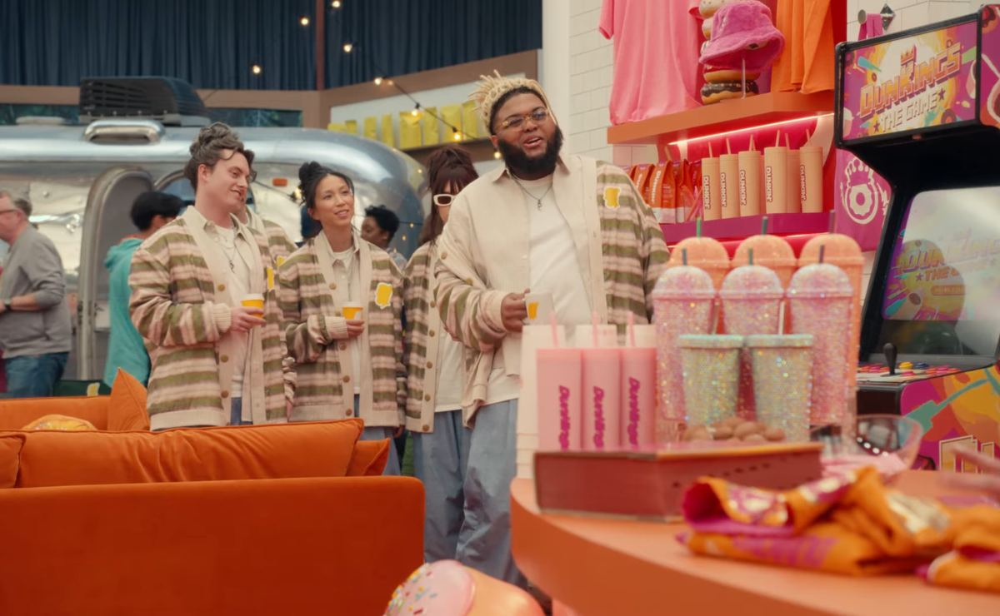

FRANKIE SERATCH
Footage
Bio
Credits
Reel
Footage
Your browser does not support embedded video.
Acting reel

Dunkin’ · Super Bowl 2025
Dir. Ben Affleck · With Druski and Jeremy Strong
More
Full reel
Google Drive
→
RECLUSE interview, Tribeca 2026
With Sasha Frolova
→
Interview with Erik Conover
YouTube
→
Headshots & résumé
Actors Access
→